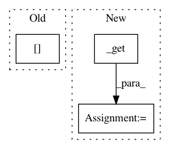

0152660a10414335b57a30cd99a6e3648df64491,catalyst/dl/callbacks/criterion.py,CriterionCallback,_compute_loss,#CriterionCallback#Any#Any#,38
Before Change
def _compute_loss(self, state: RunnerState, criterion):
loss = criterion(
state.output[self.output_key], state.input[self.input_key]
)
return loss
After Change
def _compute_loss(self, state: RunnerState, criterion):
output = self._get(state.output, self.output_key)
input = self._get(state.input, self.input_key)
loss = criterion(output, input)
return loss
In pattern: SUPERPATTERN
Frequency: 5
Non-data size: 3
Instances
Project Name: Scitator/catalyst
Commit Name: 0152660a10414335b57a30cd99a6e3648df64491
Time: 2019-09-16
Author: tez.romach@gmail.com
File Name: catalyst/dl/callbacks/criterion.py
Class Name: CriterionCallback
Method Name: _compute_loss
Project Name: analysiscenter/batchflow
Commit Name: c59fdeccbf596da0849d0d9aadc19bb98d13c9e5
Time: 2019-10-28
Author: a.kozhevin@analysiscenter.org
File Name: batchflow/research/named_expr.py
Class Name: ResearchExecutableUnit
Method Name: get
Project Name: analysiscenter/batchflow
Commit Name: c59fdeccbf596da0849d0d9aadc19bb98d13c9e5
Time: 2019-10-28
Author: a.kozhevin@analysiscenter.org
File Name: batchflow/research/named_expr.py
Class Name: ResearchResults
Method Name: get
Project Name: analysiscenter/batchflow
Commit Name: 9ec601272f9dc9fa1b01c9e9d81b0033d6c984f7
Time: 2019-12-10
Author: rhudor@gmail.com
File Name: batchflow/components.py
Class Name: BaseComponents
Method Name: crop